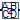
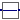
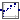
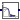
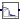

Modelica.Clocked.RealSignals.Periodic.TransferFunction
Modelica.Clocked.RealSignals.Periodic.TransferFunctionLibrary of blocks that are designed to operate only on periodically clocked signals (mainly described by z transforms)
This package contains blocks that are designed for periodically clocked system. Changing the sample rate (without changing at the same time the parameters of the block), or using the blocks on non-periodically clocked signals, will usually result in non-expected behavior.
Extends from Modelica.Icons.Package (Icon for standard packages).
| Name | Description |
|---|---|
|  StateSpace | Discrete-time State Space block |
|  TransferFunction | Discrete-time Transfer Function block |
|  PI | Discrete-time PI controller |
|  MovingAverage | Moving average filter (= FIR filter with coefficients a = fill(1/n,n), but implemented recursively) |
|  FIRbyCoefficients | FIR filter defined by coefficients |
Discrete-time State Space block
This block defines the state space representation of a discrete-time block with input vector u, output vector y and state vector x:
x = A * previous(x) + B * u y = C * previous(x) + D * u
where previous(x) is the value of the clocked state x at the previous clock tick. The input is a vector of length nu, the output is a vector of length ny and nx is the number of states. Accordingly
A has the dimension: A(nx,nx), B has the dimension: B(nx,nu), C has the dimension: C(ny,nx), D has the dimension: D(ny,nu)
Example:
parameter: A = [0.12, 2;3, 1.5]
parameter: B = [2, 7;3, 1]
parameter: C = [0.1, 2]
parameter: D = zeros(ny,nu)
results in the following equations:
[x[1]] [0.12 2.00] [previous(x[1])] [2.0 7.0] [u[1]]
[ ] = [ ]*[ ] + [ ]*[ ]
[x[2]] [3.00 1.50] [previous(x[2])] [0.1 2.0] [u[2]]
[previous(x[1])] [u[1]]
y[1] = [0.1 2.0] * [ ] + [0 0] * [ ]
[previous(x[2])] [u[2]]
Extends from Clocked.RealSignals.Interfaces.PartialClockedMIMO (Block with multiple clocked input and multiple clocked output Real signals).
| Name | Description |
|---|---|
| A[:, size(A, 1)] | Matrix A of state space model |
| B[size(A, 1), :] | Matrix B of state space model |
| C[:, size(A, 1)] | Matrix C of state space model |
| D[size(C, 1), size(B, 2)] | Matrix D of state space model |
| nin | Number of inputs |
| nout | Number of outputs |
| Name | Description |
|---|---|
| u[nin] | Connector of clocked, Real input signals |
| y[nout] | Connector of clocked, Real output signals |
Modelica.Clocked.RealSignals.Periodic.TransferFunctionDiscrete-time Transfer Function block
The discrete transfer function block defines the transfer function between the input signal u and the output signal y. The numerator has the order nb-1, the denominator has the order na-1.
b(1)*z^(nb-1) + b(2)*z^(nb-2) + … + b(nb)
y(z) = -------------------------------------------- * u(z)
a(1)*z^(na-1) + a(2)*z^(na-2) + … + a(na)
State variables x are defined according to controller canonical form. Initial values of the states can be set as start values of x.
Example:
TransferFunction g(b = {2,4}, a = {1,3});
results in the following transfer function:
2*z + 4
y = --------- * u
z + 3
Extends from Clocked.RealSignals.Interfaces.PartialClockedSISO (Block with clocked single input and clocked single output Real signals).
| Name | Description |
|---|---|
| b[:] | Numerator coefficients of transfer function. |
| a[:] | Denominator coefficients of transfer function. |
| Name | Description |
|---|---|
| u | Connector of clocked, Real input signal |
| y | Connector of clocked, Real output signal |
Discrete-time PI controller
This block defines a discrete-time PI controller by the formula:
// State space form:
x(ti) = previous(x(ti)) + u(ti)/Td;
y(ti) = kd*(x(ti) + u(ti));
// Transfer function form:
y(z) = kd*(c*z-1)/(z-1)*u(z);
c = 1 + 1/Td
where kd is the gain, Td is the time constant, ti is the time instant of the i-th clock tick and z is the inverse shift operator.
This discrete-time form has been derived from the continuous-time form of a PI controller by using the implicit Euler discretization formula.
Extends from Clocked.RealSignals.Interfaces.PartialClockedSISO (Block with clocked single input and clocked single output Real signals).
| Name | Description |
|---|---|
| kd | Gain of discrete PI controller |
| Td | Time constant of discrete PI controller |
| Name | Description |
|---|---|
| u | Connector of clocked, Real input signal |
| y | Connector of clocked, Real output signal |
Moving average filter (= FIR filter with coefficients a = fill(1/n,n), but implemented recursively)
This block computes the output y as the average of the input u and of its past values (= moving average filter):
y(i) = ( u(i) + u(i-1) + u(i-2) + … ) / n
where y(i) and u(i) are the values of y and u at clock tick i, and n are the number of u and past u values that are taken into account.
This block could also be implemented with block FIRbyCoefficients by using the coefficients a = fill(1/n, n). However, block MovingAverage is a more efficient implementation since it can be implemented recursively, contrary to a general FIR filter.
Extends from Clocked.RealSignals.Interfaces.PartialClockedSISO (Block with clocked single input and clocked single output Real signals).
| Name | Description |
|---|---|
| n | Number of points that are averaged (= number of coefficients of corresponding FIR filter) |
| Name | Description |
|---|---|
| u | Connector of clocked, Real input signal |
| y | Connector of clocked, Real output signal |
FIR filter defined by coefficients
This block computes the output y as a linear combination of the input u and of its past values (= FIR filter):
y(i) = a[1]*u(i) + a[2]*u(i-1) + a[3]*u(i-2) + …
where y(i) and u(i) are the values of y and u at clock tick i and a[:] are the filter coefficients.
At the first clock tick i=1 the past values are filled with u at this clock tick (= steady state initialization).
Extends from Clocked.RealSignals.Interfaces.PartialClockedSISO (Block with clocked single input and clocked single output Real signals).
| Name | Description |
|---|---|
| a[:] | Coefficients of FIR filter |
| Advanced | |
| cBufStart[size(a, 1) - 1] | The u-buffer [u(i-1), u(i-2), ..., u(size(a,1)-1)] is initialized with u(i=1)*cBufStart |
| Name | Description |
|---|---|
| u | Connector of clocked, Real input signal |
| y | Connector of clocked, Real output signal |